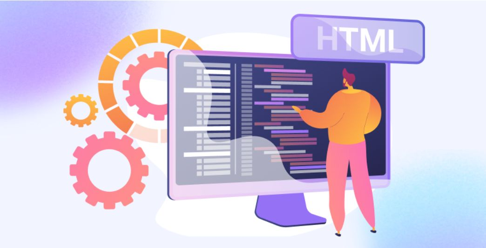

Про мене
Привіт! Мене звати Олена, я студентка Beetroot academy зі Слов'янська, Україна. Зараз я знаходжусь на захоплюючому шляху вивчення front-end розробки, освоюючи HTML, CSS та JavaScript, щоб створювати красиві, зручні та функціональні веб-сайти.
У 2024 році я закінчила курс UI/UX Design в Hillel IT-school, де навчилася основам веб-дизайну та розробки. Цей курс відкрив для мене захоплюючий світ цифрового дизайну та показав, наскільки важливо поєднувати естетику з функціональністю. До цього я працювала бухгалтером, що навчило мене бути уважною до деталей та організованою.
Моя мета — стати професійним front-end розробником та створювати веб-застосунки, які приносять користь людям.
Мої навички
Технічні навички
- HTML5 - створення структури веб-сторінок
- CSS3 - стилізація та оформлення
- JavaScript (базовий рівень) - інтерактивність
- Responsive Design - адаптивні макети
Дизайн
- UI/UX Design - проєктування інтерфейсів
- Figma - створення макетів
- Колір та типографіка
Мої навички
- Увага до деталей - в коді, як і в бухгалтерії, важлива кожна дрібниця
- Відповідальність - вміння дотримуватися дедлайнів та якісно виконувати роботу
- Організованість - ефективне планування часу та завдань
- Робота в команді - досвід співпраці в колективі до 25 осіб
- Стресостійкість - вміння зберігати спокій у напружених ситуаціях
- Бажання вчитися
Чому я обрала front-end розробку?
Мене завжди захоплювала можливість створювати щось візуальне та корисне. Front-end розробка ідеально поєднує творчість, логіку та можливість безпосередньо бачити результати своєї роботи. Кожен веб-сайт — це як головоломка, де потрібно зібрати воєдино дизайн, код та функціональність.
Освіта
Вища освіта
-
Сумський національний аграрний університет
Магістр обліку та аудиту
2005-2009, Суми
IT-освіта
-
Hillel IT-school
UI/UX Design Course
2024
Самоосвіта
- Онлайн курси з HTML/CSS
- JavaScript туторіали
- Практичні проєкти
Корисні матеріали для вивчення
Тут я зібрала ресурси, які допомагають мені вчитися:
Офіційна документація React
Це моя наступна мета — вивчити цю бібліотеку для створення сучасних веб-застосунків.
Побудова кар'єри у Front-End розробці: Поради професіонала
Відео

Контакти
Телефон: +38 050 612 54 77
Email: lenakopa3007@gmail.com
Instagram: @elenanesterenko1225
Facebook: Мій профіль
Буду рада новим знайомствам та можливостям для співпраці!